Making a Website Using Blogdown, Hugo, and GitHub Pages.
December 19 2016 • 23 min read
Since the writing of this post, simpler methods of setting up sites have been documented. Check out the blogdown book and keep your eyes peeled for an updated post.
Introduction
As I transitioned into the data science world, I kept hearing one piece of advice over and over: build a portfolio. So, once I had completed a few personal projects, I decided to investigate the best way to build a portfolio that could also house blog posts, comments, and (naturally) display R code and outputs seamlessly.
I looked into Wordpress but I wasn’t thrilled with the theme choices available if I opted for free site hosting. Then I realized that you can generate your site entirely using RStudio, which seemed like a great option but had limited customization options.
Then I stumbled upon Blogdown, a new RStudio package developed by knitr and bookdown creator Yihui Xie. The package runs using a static-site generator called “Hugo” which, when I started making my site, I had never heard of. And while the blogdown package was still under development and had no formal package documentation, I wanted to give it a try. After several days of googling, experimenting, and learning, I am now the proud owner of a site I love. This post details how I made it happen.
Disclaimer: My method may not be the most stream-lined at this time, and I fully expect to look back at this post in the future and wonder how I ever got anything done, but for the time being, this method works.
Alright, before I delve into the how of it all, I wanted to give a little bit of background information on the pieces that are involved in this: GitHub, Hugo, and blogdown. If you want to cut right to the chase, go ahead.
Blogdown
Again, Blogdown is a new package for R and RStudio that helps you to create blog posts and other types of web content using the RMarkdown language. At the time of this post’s writing, it has 8 functions:
- build_site() : Compiles all .Rmd files into Hugo-readable HTML & builds the site
- html_page() : Renders .Rmd file into Hugo-readable HTML
- hugo_cmd() : Allows you to run Hugo commands
- install_hugo() : Downloads the appropriate Hugo files to your computer to allow site generation
- install_theme() : Downloads the specified theme from GitHub
- new_content() : Generates a new file in your working directory
- new_site() : Creates the environment necessary for a new site
- serve_site() : Allows you to preview a working version of your site
Disclaimer: Again, since there is no formal documentation for blogdown yet, those definitions come from the function descriptions and my experience with using them
Blogdown runs using Hugo, so we’ll look at that next.
Hugo
Hugo is a static-site generator, meaning that instead of generating your website from scratch everytime someone visits your page, the pages are already made and ready to go when someone arrives (more info here). It’s also open-source and free, which I appreciate.
While I highly recommend going and reading some of the documentation on the Hugo website I’ll cover the important vocabulary for getting started on this process here. If you’re already familiar with Hugo, you can skip this part.
- Themes : These are user-generated files for formatting your website. Find one you like here.
- Templates : Templates come from the theme and determine the look of a specific type of page. Hugo uses two types of page templates by default: + Single : This type is for pages that will only have one kind of content (e.g., a blog post) + List : This type is for pages that will only consist of a list of things (e.g., a portfolio page of your projects or a page that lists your blog posts)
- Partials : To generate different kinds of content, Hugo relies on html files specific to that content type. (e.g., a different setup for an about page, the design of the sidebar or header of your page, etc.)
- Shortcodes : To cut down on the amount of by-hand coding needed to generate your site, Hugo uses “shortcodes” or small snippets of code that serve a single, commonly used purpose. (e.g., to insert a single Tweet in your page you can use the Twitter shortcode:
{{< tweet idnumber >}}). Shortcodes can be used inside of partials. - Front Matter : The information at the top section of any markdown (.md) or Rmarkdown (.Rmd) document that gives important information for the site development. For instance, at the top of this .Rmd document, the front matter looks like this.
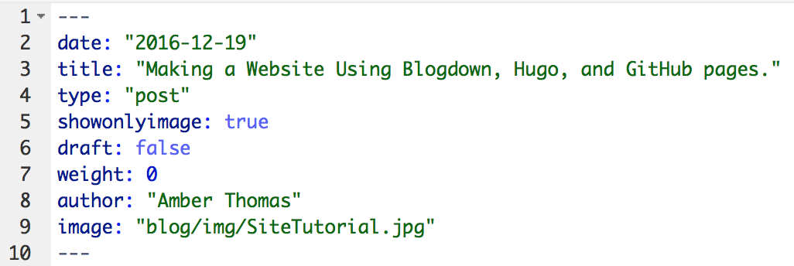
- Variables: These pieces of information often come from either front matter, the content itself, or the file’s location (e.g., a file in the “blog” folder will automatically obtain the .Section variable “blog”, while the .Title variable is defined by you in the front matter, and the .Summary variable is automatically generated by Hugo to include the first 70 words of your post).
Certainly, there are other important aspects of Hugo, but I found those to be the most important (and often most confusing) when making my site.
GitHub
I don’t want to go into too much detail about GitHub (or this post will never actually get started), but I do want to provide some background information about what it does and why it’s useful. (Again, skip ahead if you’re a GitHub pro)
First, GitHub is powered by Git, a command-line version-control system. If you’re not familiar with it, Git has no buttons to press, only commands to type to control it, but it allows you to save multiple versions of a file. The beauty of version control is that if you mess up (which, let’s be real, we’ve all done), you can go back to the last saved version. It’s like reaching a “save point” in a video game that you can return to if your character dies. GitHub is the place where you can store all of these versions of your work. Other developers can see, make a copy of, ammend their copy, and make suggestions on your work.
Keep in mind: GitHub does have a free version, but it makes all of your work publicly available. While this is fantastic for helping others to add on or change your project, be aware of this if you are building a website on this platform. For instance, you can go dig around in all of the code used to generate my site here.
Ok, basic vocab for GitHub use and then I’ll promise I’ll get started!
- Repository : When you make an account on Github the first thing you’ll want to do is make a repository (or repo). This is the place to store all of your files for a given project.
- Forking : Say you really like someone else’s project on GitHub and you’d like to make a copy of it on your account to adjust however you’d like? Well, that process is called forking. To do it, find a repo that you like and click the ’ fork ’ button in the right hand corner.
- Branch : This is a “parallel version” of a repo that you can adjust without impacting the original repo.
- Remote : The copy of your files that reside on GitHub.com
- Local : The copy of your files that reside on your computer
- Commit : A change to a file, usually submitted with a message from you to indicate what was changed
- Push : Once you commit changes on your local files, you want to send (or push) them to your remote repo, making them available for others.
- Pull : If multiple people are working in your remote repo, they may have made a change that is not reflected in your local version. You can pull the newest version down to your computer to work on it.
- Subtree : This is a repo inside of a repo. More on this later.
Ok, all of that will be helpful as we continue!
Building the Page
Installing Necessary Packages and Software
3 last notes before I get started.
- Since my site is already created (and I didn’t think about documenting it while I was doing it), this post documents the creation of a near-identical site for an animation studio: Animoplex.
- I’m erring on the side of too much detail in this post, so skip past things you know as needed.
- I know, I’m behind the times and am still using the command line outside of RStudio to work with GitHub. Some day I’ll convert. If you’d like to do that today, there’s information here.
Ok, getting started for real.
Setting Up GitHub
- If you don’t already have one, create a GitHub account.
- Choose your username wisely as it will be in your new site URL.
- On your dashboard, in the upper-right-hand corner, you’ll see a + sign with an arrow. Click it and go to “New Repository”.

- Name your repository your_username.github.io (see the below example for github username: animoplex)
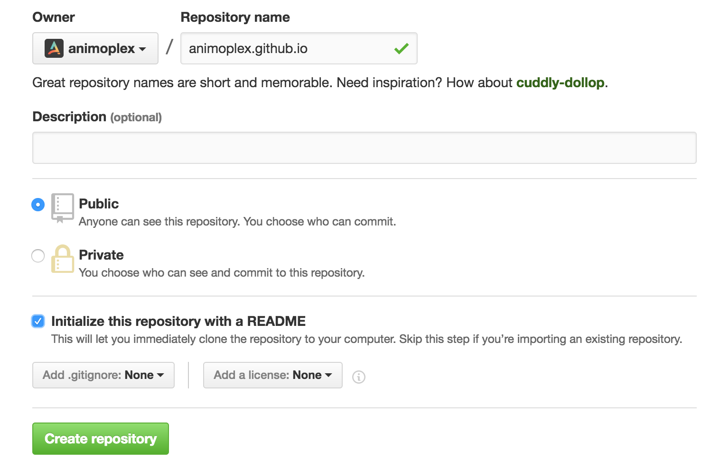
- Click Create Repository. You should be on your repository page.
- We now need to create a local copy (or clone) of this repo. Click the green “Clone or Download” button on the right hand side and copy the url displayed.
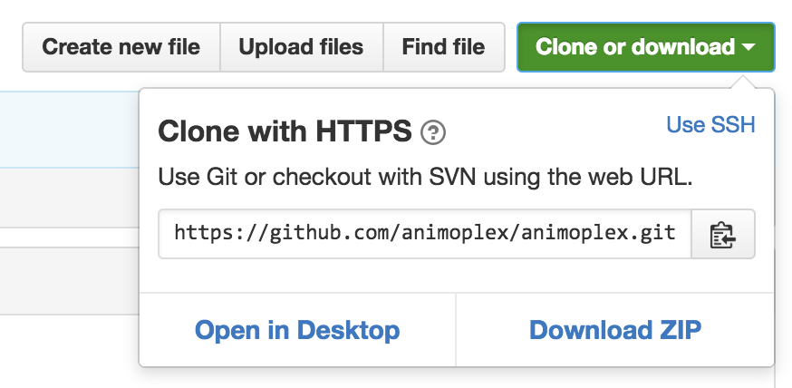
- On a Mac, open Terminal (search “Terminal”). On Windows, open Git Bash. More detail for different operating systems here. If this is the first time you’ve ever used GitHub on your machine, you’ll need to authenticate it (detailed instructions here)
- Then navigate to your working directory (i.e., where you’d like all of your files to be stored). In git, to see your current working directory type
pwdand to change directories usecd. Typegit cloneand then paste the URL of your repository. You should get feedback like that pictured below.
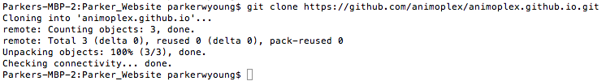
Great! So now we have a clone of our GitHub Repo on our local computer. Time to put things in it.
RStudio and Blogdown
While you can certainly follow the below steps in the R command-line, I’m going to give examples of how to do this process in RStudio.
- Launch RStudio and create a New Project. Select “Existing directory” and navigate to the folder above the working directory you just created from GitHub (in my case, it’s a folder called Parker_Website).
Your local GitHub directory (for me animoplex.github.io) must be completely empty to create a new_site. If you accidentally put any files in there, move them out until after the new_site is created
- Install the
blogdownpackage from GitHub and load it. I tend to use thedevtoolspackage to do this, but you can download it however you’d like.
devtools::install_github("rstudio/blogdown")
library(blogdown)- Intall Hugo. You can either do it manually (see documentation) or using
blogdown. I recommendblogdown.
install_hugo()Note for Mac Users: the first time I installed Hugo, I also needed to install homebrew.
- Now, we create the site! Set your working directory to the GitHub directory (in my case, the folder called animoplex.github.io). Then use the following
blogdownfunction.
new_site()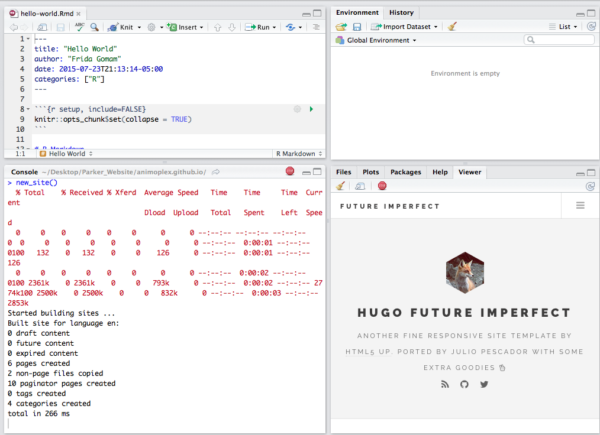
You’ll notice a few things happened!
- A .Rmd document entitled “hello-world.Rmd” automatically opened.
- Your viewer window displays the homepage of your site.
- If you click the “Show in New Window” button on the top left of your viewer window, your website will open in your local web browser. To return to R editing, click the Stop sign in the right hand side of the RStudio console window. + Note: this site is not yet “live”, so you can only access it from your computer.
Everything we just discussed is what happened in R. Let’s take a look at our working directory folder.
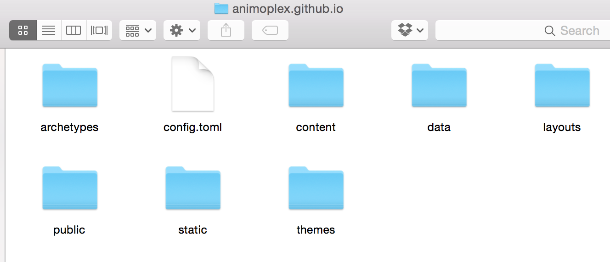
The new_site function generated all of the folders that we’ll need to build our website. Take a minute to look at the contents of the folders, but don’t change anything just yet.
Before moving any further, we need to select a theme. For this example, I’m going to use the same one I use on my personal website, but you can use any one that you like. You can change themes later, but I’d recommend starting with one you like.
Install your theme using the
blogdownfunctioninstall_theme(), and the theme creator’s GitHub username and the theme name (both are listed on the Hugo Theme site).
install_theme("kishaningithub/hugo-creative-portfolio-theme", theme_example = TRUE, update_config = TRUE)We’re in great shape! We’ve got a GitHub repo full of the building blocks of our website. Now, we have go back to GitHub for one more thing before we start adding content to the site.
Initializing GitHub pages to work with Hugo and Blogdown
While this method does work, there are easier ways to set up your site. I’d recommend checking out the blogdown book and keep your eyes peeled for an updated post.
The way that GitHub pages work is that they take any information on the master branch of your repo and use that to build your website. Which is great except that it differs from how Hugo works.
Hugo takes all of the content from its archetypes, content, data, layouts, static, and themes folders (the ones that were just added to your local working directory) and uses them to build a website inside of the public folder in your working directory.
So, to get Hugo and GitHub pages to play nicely, we need to take all of the files from inside the public folder and keep them on the master branch, while we keep everything else on another branch. You can do this manually, but it is unnecessarily tedious, particularly when you make frequent updates. Luckily, a few people have already figured out how to make this more stream-lined (look at these fantastic posts here and here).
We will need to use a sub branch, which is essentially a repository inside of a repository. So we will make a branch called sources which will contain all of the folders and files inside of our local working directory (including the public folder). Then we’ll make a sub branch called master which will essentially exist inside of that public folder, filling up automatically with files as you generate them.
Cool, right? Ok, so to make it happen:
- Go to your repo on GitHub. On the left-hand side you’ll see a button that reads “Branch: Master”. Click on it and in the text box type “sources” and click “Create branch: sources from ‘master’”.
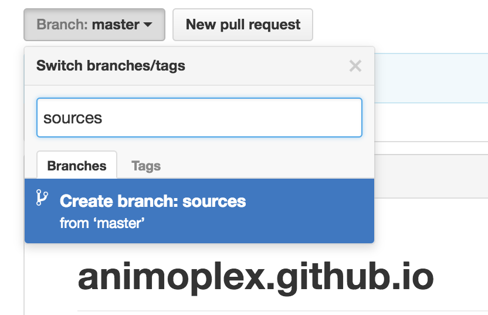
Now you have 2 branches: ‘sources’ and ‘master’. You should see a button next to “1 commit” that reads “2 branches”. Click on it.
You should see that ‘master’ is your default branch and ‘sources’ is your active branch. We want to switch these, so click the button that says “Change default branch”.
Under Default Branch, choose ‘sources’ from the dropdown menu and click update. It will ask if you are sure. If you have followed each step so far and have nothing on your master branch, then click “I understand, update the default branch”.
Your default branch is now ‘sources’. In your command line interface (terminal or git bash) navigate to your github working directory (for me, it’s animoplex.github.io), and type
git checkout sources.Time to set up our sub branch. You have two options here.
- You can enter each of these code pieces below step by step into your command line interface (terminal or git bash). Make sure to replace $USERNAME with your GitHub username and $SOURCE with sources throughout.
- You can save this code chunk as setup.sh in your working directory. To run it, enter
bash setup.shin the command line interface.
You can (and should) thank Jente Hidskes for both of these options and for writing this script. Since we did not already have a README.md file in our sources folder, I added one line to this script to ammend that. Jente’s original notation is here for attribution.
THIS WILL DELETE YOUR MASTER BRANCH, DON’T DO THIS IF YOU HAVE ANY CONTENT IN YOUR MASTER BRANCH
If you run the below script and get an error about authentication, follow the GitHub authentication steps here
#!/usr/bin/env bash
# This script does the required work to set up your personal GitHub Pages
# repository for deployment using Hugo. Run this script only once -- when the
# setup has been done, run the `deploy.sh` script to deploy changes and update
# your website. See
# https://hjdskes.github.io/blog/deploying-hugo-on-personal-github-pages/index.html
# for more information.
# GitHub username
USERNAME=hjdskes
# Name of the branch containing the Hugo source files.
SOURCE=hugo
msg() {
printf "\033[1;32m :: %s\n\033[0m" "$1"
}
msg "Adding a README.md file to \'$SOURCE\' branch"
touch README.md
msg "Deleting the \`master\` branch"
git branch -D master
git push origin --delete master
msg "Creating an empty, orphaned \`master\` branch"
git checkout --orphan master
git rm --cached $(git ls-files)
msg "Grabbing one file from the \`$SOURCE\` branch so that a commit can be made"
git checkout "$SOURCE" README.md
git commit -m "Initial commit on master branch"
git push origin master
msg "Returning to the \`$SOURCE\` branch"
git checkout -f "$SOURCE"
msg "Removing the \`public\` folder to make room for the \`master\` subtree"
rm -rf public
git add -u
git commit -m "Remove stale public folder"
msg "Adding the new \`master\` branch as a subtree"
git subtree add --prefix=public \
git@github.com:$USERNAME/$USERNAME.github.io.git master --squash
msg "Pulling down the just committed file to help avoid merge conflicts"
git subtree pull --prefix=public \
git@github.com:$USERNAME/$USERNAME.github.io.git masterYou should only ever run the above script once.
Now need to commit any changes that we’ve made to our local repo. Type
git statusto see what you need to do next (usually add tracking to files, commit changes andgit push).Now, we are set up to update our site as we go. Again Jente Hidskes comes to our rescue with a great script to do this. Just like the last script, you can enter this line-by-line or save it as “deploy.sh” in your working directory and run it as
bash deploy.shevery time you make updates to your site.- Don’t forget to change USERNAME or $USERNAME to your GitHub username and SOURCE or $SOURCE to sources
#!/usr/bin/env bash
# This script allows you to easily and quickly generate and deploy your website
# using Hugo to your personal GitHub Pages repository. This script requires a
# certain configuration, run the `setup.sh` script to configure this. See
# https://hjdskes.github.io/blog/deploying-hugo-on-personal-github-pages/index.html
# for more information.
# Set the English locale for the `date` command.
export LC_TIME=en_US.UTF-8
# GitHub username.
USERNAME=hjdskes
# Name of the branch containing the Hugo source files.
SOURCE=hugo
# The commit message.
MESSAGE="Site rebuild $(date)"
msg() {
printf "\033[1;32m :: %s\n\033[0m" "$1"
}
msg "Pulling down the \`master\` branch into \`public\` to help avoid merge conflicts"
git subtree pull --prefix=public \
git@github.com:$USERNAME/$USERNAME.github.io.git origin master -m "Merge origin master"
msg "Building the website"
hugo
msg "Pushing the updated \`public\` folder to the \`$SOURCE\` branch"
git add public
git commit -m "$MESSAGE"
git push origin "$SOURCE"
msg "Pushing the updated \`public\` folder to the \`master\` branch"
git subtree push --prefix=public \
git@github.com:$USERNAME/$USERNAME.github.io.git master- Make sure that everything worked correctly. Go to your GitHub repo and look at the contents of your sources and master branches. For me, they look like this:
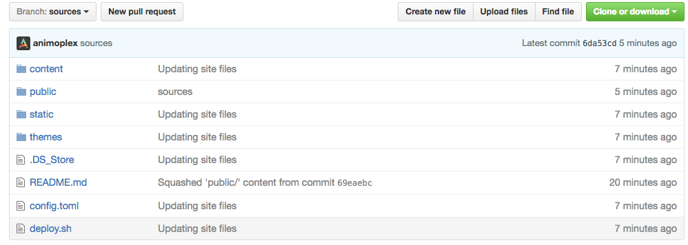
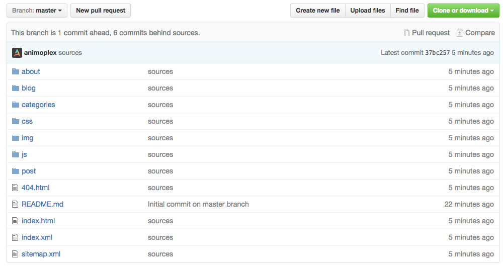
If something seems to have gone wrong, you can go back up to running the setup.sh script again. This will delete whatever you have in your master branch, so be careful!
Now we’ve got our website files on our local machines, a github repo setup to play nicely with Hugo, and RStudio setup to work with blogdown. Time to add content!
Adding content
Site Configuration
The setup of this section will differ slightly based on the theme you picked, but most themes have the same basic building-blocks. Again, I’m using this one.
In your local GitHub repo (mine is a folder called animoplex.github.io) find the file called “config.toml” and open it (RStudio will open this type of file). You’ll see lots of things to change that will impact the configuration of your site (again, the exact contents may vary by theme).
- BaseURL : This is a link to your website’s home page (for me, it’s https://animoplex.github.io/) + Don’t forget the last /
- Title : Insert the title for your site here.
- disqusShortname : If you want to enable comments on your website, you can use the commenting engine disqus. You’ll first need to setup your account here and after you create a shortname, enter it in the config.toml file.
- googleAnalytics : If you’d like to have Google monitor the analytics for your site so that you can study traffic flow on your pages, you’ll need to enable Google Analytics. First, sign up here. It will generate a tracking code for you. Enter the tracking code into config.toml
Use the ReadMe from your specific theme to alter theme-specific changes.
If there are options for social links that you don’t use, just delete them from the config.toml file.
When you’re done in the config.toml file, save it. Return to your terminal/git bash window, check your
git statusand follow instructions (usually add, commit, push). Then use thedeploy.shscript again to update your remote GitHub repo.
If you are unfamiliar with Git Commands, check out this resource.
Adding a Page
My theme comes pre-setup with a Home page, an About page, and a Contact page. But I’d like to add a Blog Page.
- In the config.toml, find where your site creates new links (for me, it’s called [[params.navlinks]]). And add the name and location of your new page. Here’s what mine looks like (including the added “Blog”).
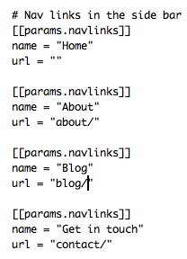
We added the location as “blog/”, which means that Hugo is going to look in our content folder for a folder called blog. If your theme didn’t come with one, go ahead and add one. This same process can be repeated for any new page you’d like to add. Just make sure that a folder exists where you told the config.toml file to look.
To preview your site, save the config.toml file, and inside RStudio type
serve_site(). Your preview will show up in the viewer window. We now have a link to a blog page!
Page Templates and Fixing Blank Pages
If you click on the “Blog” link we created in the last section, it’s going to take you to yourwebsite.github.io/blog. Depending on your theme, this may work fine, but for the theme I am using, clicking this link takes me to a white page.
A blank page can indicate a few things:
- There is no content inside this page’s folder
- Hugo doesn’t have a template file for this type of page
To check if there is content in the page’s folder, go to your blog folder and look inside. If there’s nothing in there, that could be the problem (jump to Adding a Blog Post). If there are files in there (.md, .HTML, or blogdown .Rmd files) and you’re still getting a blank page, then Hugo doesn’t have a template file for this type of page.
Remember, by default, Hugo looks for two page templates: single page and list pages. We want our blog to be a list page. Does this template come with a list page?
To find out:
- Inside your local GitHub repo, navigate to themes > the_theme_youre_using > layouts >_default and look for a list.html file
Looks like my theme comes with one, but it’s empty!
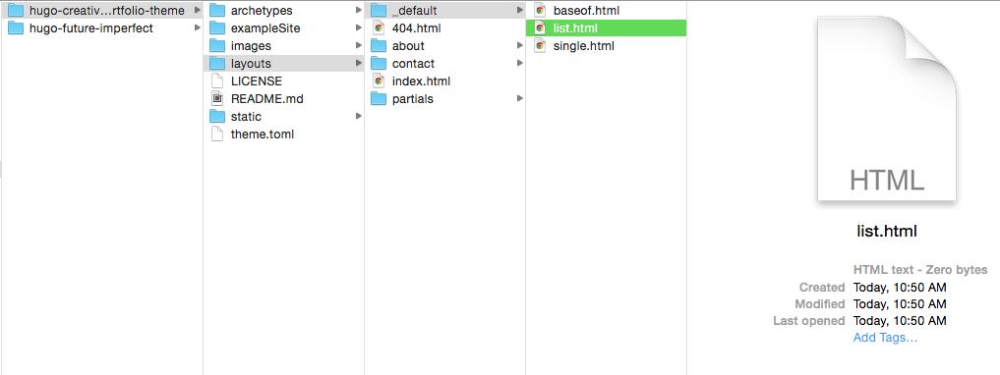
That means Hugo has no idea how it should format that list of objects. If you have chosen a theme that doesn’t have a list file and you’d like a page with a list, you have options:
- Easy option: Switch to a new theme that does have a list template
- Harder option: Create your own list template that matches the theme
For my site, I made a new list.html file to match this theme. Getting into how I created it is outside the realm of this post, but if you’re using the Creative Portfolio Theme and you’d like to use my list file, it’s available here. To use it, copy the text into a text editor, save the file as list.html inside the layouts/_default folder.
Once you add the file, use
serve_site()to check the formatting. You should no longer have a blank blog page! ### Adding a Blog Post or Portfolio Piece If you’ve been following along this far, you may have guessed by now that the place to add new files is inside the content folder in your local GitHub repo. Do not manually add anything to the public folder If you want to add new blog posts, add a new file to your “Blog” folder. If you want to add new Portfolio pieces, add it to your “Portfolio” folder. If you want to add new content to a section that doesn’t exist yet, go back here first.
- In RStudio, to add new content, use the
new_content()function. Blogdown automatically puts new content inside the content folder, but you need to indicate which sub-folder your new content should go into. For instance, if I want to add a blog post called “Animoplex Animations”, I’d enter:
new_content("blog/animoplex_animations.Rmd", format = "yaml")You now have a brand new .Rmd document, with date and title automatically in the front matter. You can add other fields as well, like tags, categories, author name, and an image to associate with your file. I’ll add a few things to the front matter of my new blog post, and then a little practice text.
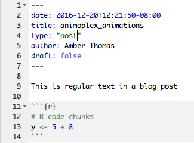
Great! So let’s useserve_site() to check out the page.
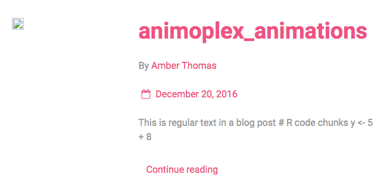
We notice a few things: * The text from the body of the file shows up in this view * We’re missing an image The text in this view is the{{ .Summary }}, or a Hugo-generated piece of text that includes the first 70 words of your file. If you are working in a .md file, you can add <!--more--> where you’d like your summary to end.
If you’d like a bit more control, take this great suggestion from Tov Are Jacobsen.
Now let’s deal with the missing image.
### Adding images
In the blog post we just created, there’s no image, but clearly there should be. We know that this page is created using the list.html file, so let’s look there to see where Hugo expects the image to be.
When we look at that file, we find this chunk of code referring to an image.
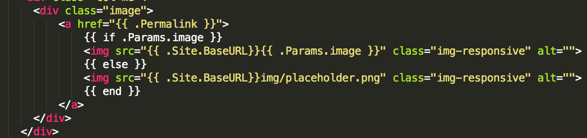
The Params.image indicates that it is looking for something named “image” in the front matter of your blog post. This essentially reads “If there is an image location specified in the front matter of the document, use that image. Otherwise, use the ‘placeholder.png’ located in the img folder”. We don’t have an image in either location! Let’s change that. Let’s add an image of Animoplex’s Star Wars Yule Log to this blog post. I put the image inside the content/blog folder, so now to the front matter of our post, we’ll just addimage: "blog/starwarsyulelog.gif"
Now, when we use serve_site() it looks like this:
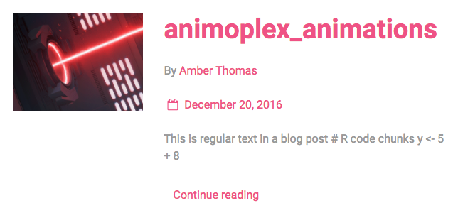
That’s better! Again, this process can be repeated to find the missing information in any section of your site. One more example. In the Creative Portfolio Theme, the home page has several portfolio pieces. If we wanted to add a new one of those, we’d addnew_content() to the portfolio folder. We’ll also set an image to this one.
So the front matter looks like this:
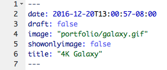
And our home page now contains this: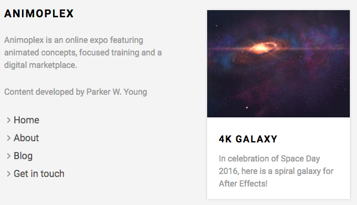
When you’re done adding and modifying content, don’t forget to check yourgit status and follow the instructions (usually add, commit, push) and then run deploy.sh to update your site.And that’s it! Use these steps to add new content throughout your site.
Troubleshooting
Page is blank
Refer back to this point
Images aren’t showing up
Refer to this point
Page has no formatting
Check the baseurl in your config.toml file. It needs to be formatted like this:
* baseurl = “https://proquestionasker.github.io/”
Don’t forget the last / !!!
Also check the “type:” argument in the front matter of your post. If your about page is lacking formatting, set the type: "about" in the front matter of the page.
My post won’t show up!
This one plagued me forever. Turns out that in the front matter of my document, I had draft: true.
If Hugo thinks your post is a draft, it will not publish it.
Have fun!
That’s it! That’s how I set up the page you are currently on, and I hope it has helped you figure out how to use GitHub, Hugo, and blogdown together. I’d love to hear any comments you may have and let me know if you have any questions at all. Good luck!